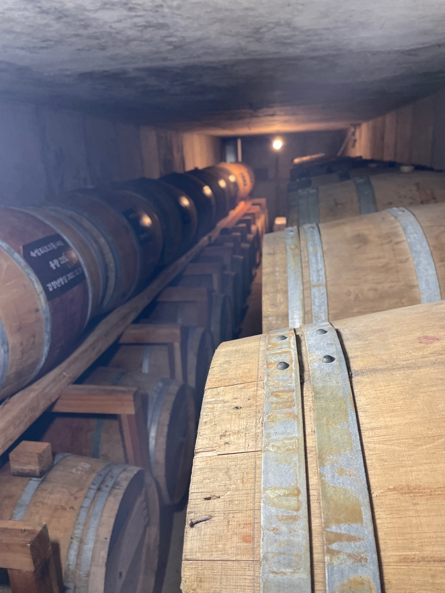

FULL SCREEN
WILLOW WOOD
SPRING·SUMMER EDITION
라벨의 탄생
한복의 결을 담은
Tyvek 라벨
사계절의 빛깔을
한 병에
은은한 금박이
우아함을 깊게
전통과 현대,
같은 결을 입다
진한 포트 캐스크
Released

구리 증류기로 빚은
전통 쌀 소주
15 °C · 습도 65%
시간이 빚어내는 깊이
Spring · Summer Edition
기대해 주세요